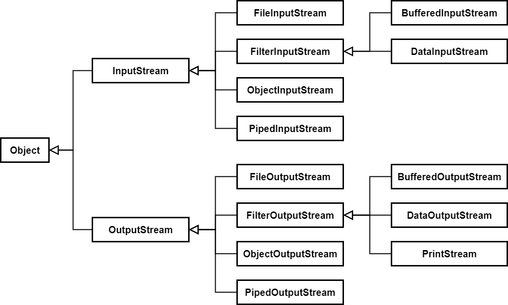

Java程序设计
第七章 输入/输出
文件
- 文件，是将相关记录放在一起的数据集合
- 目录，是一组文件的集合
- 所有的数据均以二进制形式存储
- 文件读取，即将文件中的二进制数字取出来的过程
- 文件写入，即将文件以二进制数字形式存储在文件中
文件类(1)

文件类(2)
- File对象既可表示文件，也可表示目录
- 目录，可显示目录清单，新建或删除目录
- 文件，可查询文件属性和路径信息，输出和修改文件名等操作
- 文件路径，包含相对路径和绝对路径
- 相对路径，从当前目录为参考点描述文件位置的路径
- 绝对路径，完整的描述文件位置的路径，从根目录开始，用户不需要其它信息就可判断出文件的位置，如"C:\User\Admin\Documents\aa.txt"
文件读写基础
- 用Scanner从文本文件中输入 ReadDataFile.java
- 用PrintWriter可往文本文件中输出 WriteDataFile.java
文件说明
- File类只能访问文件的信息，无法访问文件的具体内容，不能实现对文件的读写操作
- I/O流，可以实现对文件的读写操作

文件编码
- 文本文件以二进制形式存储，不同的编码标准有不同的形式

流
- Java中将输入输出都抽象成流
- 输入/输出的数据称为数据流(Data Stream)，可视作是有序的，有起点和终点的字节集合

流的分类
- 按数据流向
- 输入流 -- 程序可从中读取数据的流
- 输出流 -- 程序能向其中输出数据的流
- 按数据传输单位
- 字节流 -- 以字节为单位传输数据的流
- 字符流 -- 以字符为单位传输数据的流
- 按流的功能
- 节点流 -- 用于直接操作数据源的流
- 过滤流 -- 也叫处理流，对一个已存在流的连接和封装，用于提供更为强大、灵活的读写功能
流的分类
| 字节流 | 字符流 | |
|---|---|---|
| 输入流 | InputStream | Reader |
| 输出流 | OutputStream | Writer |
每一个输入数据流都必须与一个数据源相连接
字节流
- InputStream/OutpuStream
- 以字节为单位的抽象流类，定义了字节流所有输入输出基本操作

字节流
字符流
- Reader/Writer
- 以字符为单位的抽象流类，定义了字符流所有输入输出基本操作
字符流

文件流(字节流)
- FileInputStream/FileOutputStream
- 专门用于操作数据源中的文件的流
- 将二进制流与外部文件相关联
文件流(字符流)
- FileReader/FileWriter
- 专门用于操作数据源中的文件的流
- 将字符流与外部文件相关联
- 为提高效率，可采用一次读取一个字节数组和一次写入一个字节数组的形式
缓冲流
- 为提高数据读写的效率，Java API提供了带缓冲功能的流类
- 使用这些流时，先创建一个内部缓冲区数组
- 读取字节或字符时，先以从数据源读取到的数据填充该内部缓冲区，然后再返回
- 写入字节或字符时，先以要写入的数据填充该内部缓冲区，然后一次性写入到目标数据源中
- BufferedInputStream/BufferedOutputStream，针对字节的缓冲输入输出流
- BufferedRreader/BufferedWriter，针对字符的缓冲输入输出流
- 当操作字节文件或字符文本文件时，建议使用缓冲流，提高程序运行效率 TestFileBuffered.java
数据流
- 用于处理基本数据类型的读取和写入
- DataInputStream/DataOutputStream
- TestDataInputStream.java
- 首先在内存中分配一个字节数组，并提供一个输出管道
- 用DataOutputStream对输出管道进行套接，并将一些Java类型数据写到字节数组中
- 创建一个输入管道，用DataInputStream对输入管道进行套接，获取相应数据内容
- TestDataOutputStream.java
- 将数据流和文件流进行套接，写入数据即表示将数据输出到文件中
对象流
- 适用于存储和读取基本数据类型或对象的过滤器，能将Java中的对象写到数据源中，也能将数据源中的对象还原
- 用ObjectOutputStream保存基本类型数据或者对象的机制称为序列化
- 用ObjectInputStream读取基本类型数据或者对象的机制称为反序列化
- ObjectOutputStream/ObjectInputStream不能序列化用static或final修饰的成员变量
- 所有能被序列化的类必须实现java.io.Serializable接口
对象流实例
- Student.java 定义了可序列化的Student类
- SerializableStudent.java 创建了一个Student类对象，并将其序列化到文件student.dat中
- DeserializableStudent.java 将指定文件中的数据反序列化，并打印输出信息
- 从运行结果来看，读取出来的数据中，age值丢失了，这是因为其是用transient修饰的，其值未被序列化到文件中